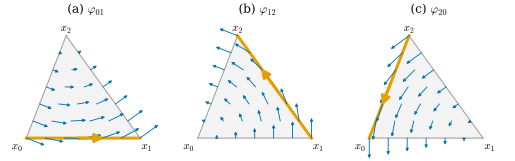
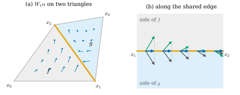
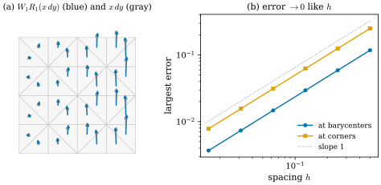

36.3 Interpolation: Whitney Forms
Goals
- barycentric coordinates로 hat function을 만들고, vertex 값의 piecewise linear interpolation을 설명할 수 있다.
- Whitney 1-form과 2-form을 정의하고 triangle 위에서 계산할 수 있다.
- \(R\circ W = \id\)를 증명하고, \(W\circ R \ne \id\)인 예를 들 수 있다.
- Whitney interpolant의 tangential 성분이 edge를 건너 연속이고, \(W\)가 \(d\)와 교환함을 증명할 수 있다.
Prerequisites
- Proposition 33.1.8, Definition 33.1.9: barycentric coordinates, Definition 33.1.15: simplicial complex
- Definition 36.1.1: de Rham map \(R\), Definition 36.1.6: discrete form
- Definition 36.2.14: coboundary operator \(d_0, d_1\)
- Proposition 35.3.12: 상수 form의 simplex 적분, (34.4.3): covector의 wedge는 determinant
Motivation
Section 36.2까지 우리는 smooth form에서 수의 배열로 가는 길(\(R\))과 그 수들이 chain 위에서 하는 일을 보았다. 이제 반대 방향이 필요하다. edge마다 수가 하나씩 있을 때, 그 사이의 점에서 1-form의 값은 무엇이라고 해야 하는가? 그림을 그리거나, 다른 점에서 값을 읽거나, smooth한 식과 비교하려면 mesh 전체에 정의된 form이 있어야 한다.
함수에서는 답이 익숙하다. vertex 값을 triangle마다 linear하게 이어 붙인다(Section 31.3). 그러나 1-form은 같은 방법으로 할 수 없다. triangle마다 상수 1-form을 맞추면, 세 edge 값의 합이 \(0\)일 때만 맞출 수 있다(Exercise 36.1.3). 이 절의 Whitney form은 이 문제를 푸는 표준적인 답이다 [Whitney57]. 핵심 요구는 하나다. 만든 form을 다시 적분하면 출발한 수가 정확히 나와야 한다.
Hat Functions
이 절에서 \(\mathcal{K}\)는 \(\R^N\) 안의 pure 2-complex(모든 simplex가 어떤 triangle의 face, Definition 33.2.15)이고 vertex는 \(x_i\)다. triangle \(f\) 위의 form은 \(f\)의 평면에 평행한 vector만 받는다. \(\R^2\)의 mesh에서는 그 평면이 \(\R^2\) 자신이다.
Definition 36.3.1 (hat function). vertex \(i\)마다 함수 \(\varphi_i\colon\abs{\mathcal{K}} \to \R\)를 다음과 같이 정한다. 점 \(p\)가 \(i\)를 vertex로 갖는 simplex \(\sigma\)에 있으면 \(\varphi_i(p)\)는 \(\sigma\)에 대한 \(p\)의 barycentric coordinate 중 \(x_i\)의 것(Definition 33.1.9)이고, 그런 simplex에 없으면 \(\varphi_i(p) = 0\)이다. \(\varphi_i\)를 vertex \(i\)의 hat function(모자 함수)이라 한다.
이 정의가 잘 정의되는지 확인하자. 점 \(p\)가 simplex 둘 \(\sigma, \tau\)에 있으면 \(\sigma \cap \tau\)는 둘의 공통 face다(Definition 33.1.15의 조건 (2)). face \(\rho\)의 점의 barycentric coordinates는 \(\rho\)의 vertex에서는 \(\rho\)에 대한 좌표와 같고 나머지 vertex에서는 \(0\)이다. \(\rho\)에 대한 좌표에 \(0\)을 붙인 것이 \(\sigma\)에 대한 표현이 되고, 그 표현은 유일하기 때문이다(Proposition 33.1.8). 따라서 \(\sigma\)로 계산하든 \(\tau\)로 계산하든 같은 값이고, \(i \notin \rho\)이면 두 계산 모두 \(0\)이다.
Proposition 36.3.2 (properties of hat functions). (a) \(\varphi_i\)는 continuous이고 각 triangle 위에서 affine 함수의 제한이다. (b) \(\varphi_i(x_j) = \delta_{ij}\)(Kronecker delta). (c) \(\abs{\mathcal{K}}\)의 모든 점에서 \(\sum_i\varphi_i = 1\)이다. (d) \(\R^2\)의 반시계 방향 triangle \(f = [i, j, k]\)(넓이 \(A_f\)) 위에서
이다. 여기서 \(J\)는 \(+90^\circ\) 회전이다. 곧 \(\nabla\varphi_i\)는 맞은편 edge에 수직이고 \(x_i\) 쪽을 향하며, 크기는 \(x_i\)에서 맞은편 edge까지의 높이의 역수다.
Proof. (a) triangle \(f\) 위에서 barycentric coordinates는 linear system \(p = \sum_a\lambda_ax_a\), \(\sum_a\lambda_a = 1\)의 해이므로 \(p\)의 affine 함수다. \(\abs{\mathcal{K}}\)는 유한 개의 닫힌 triangle의 합집합이고, 위의 확인에 의해 두 triangle 위의 식이 겹치는 곳에서 같으므로 \(\varphi_i\)는 continuous이다. (b) \(x_j\)의 barycentric coordinates는 \(x_j\) 자리만 \(1\)이다. (c) \(p\)를 품은 triangle \(f\)에서 \(f\)의 세 좌표의 합이 \(1\)이고, \(f\)의 vertex가 아닌 \(i\)는 \(\varphi_i(p) = 0\)이다. (d) \(\varphi_i\)는 edge \([j, k]\) 위에서 \(0\)이므로 \(\nabla\varphi_i\)는 \(x_k - x_j\)에 수직이다. \(\R^2\)의 vector \(a, b\)에 대해 \(\inner{Ja}{b} = a^1b^2 - a^2b^1\)(부호 있는 넓이의 두 배)이고 \([j, k, i]\)는 반시계 방향이므로 \(\inner{J(x_k - x_j)}{x_i - x_j} = 2A_f\)이다. 따라서 오른쪽 vector \(v\)는 \(\inner{v}{x_k - x_j} = 0\), \(\inner{v}{x_i - x_j} = 1\)을 만족한다. \(\nabla\varphi_i\)도 같은 두 조건(\(\varphi_i\)는 \(x_j \to x_k\)에서 \(0\)에서 \(0\)으로, \(x_j \to x_i\)에서 \(0\)에서 \(1\)로 간다)을 만족하고, 두 vector \(x_k - x_j, x_i - x_j\)가 \(\R^2\)를 span하므로 \(\nabla\varphi_i = v\)이다. 합이 \(0\)인 것은 (c)를 미분한 것이다.
Example 36.3.3 (hat functions on a triangle). (a) reference triangle \([x_0, x_1, x_2] = [(0,0), (1,0), (0,1)]\)에서 \(\varphi_0 = 1 - x - y\), \(\varphi_1 = x\), \(\varphi_2 = y\)이고 gradient는 \((-1, -1)\), \((1, 0)\), \((0, 1)\)이다. (b) Example 33.1.10의 triangle \(x_0 = (0, 0)\), \(x_1 = (1, 0)\), \(x_2 = (0.35, 0.9)\)(넓이 \(0.45\))에서 (36.3.1)은 \(\nabla\varphi_0 = J(-0.65, 0.9)/0.9 = (-1, -0.7222)\), \(\nabla\varphi_1 = J(-0.35, -0.9)/0.9 = (1, -0.3889)\), \(\nabla\varphi_2 = J(1, 0)/0.9 = (0, 1.1111)\)을 준다. 셋의 합은 \(0\)이다. (c) mesh에서 \(\varphi_i\)의 그래프는 vertex \(i\) 위에서 높이 \(1\)이고 \(i\)의 star 밖에서 \(0\)인 천막이다(Figure 31.3.1(a)).
Verification: verify/v-36-3-whitney-forms.py
Non-example 36.3.4. (a) “\(x_i\)에 가장 가까운 점에서 \(1\), 나머지에서 \(0\)”인 함수도 \(x_j\)에서 \(\delta_{ij}\)를 주지만 continuous가 아니고, 그 합으로 만든 interpolation은 계단 함수다. (b) triangle \(f\) 위의 \(\lambda_i\)를 정의하는 affine 식을 \(\R^2\) 전체로 넓힌 함수는 continuous이지만 \(f\)에서 멀어지면 \(0\)이 아니다. 그래서 그것으로 만든 interpolation은 vertex \(i\)의 값이 먼 곳까지 영향을 준다. hat function은 continuity와 locality(\(i\)의 star 밖에서 \(0\))를 함께 갖는다.
vertex 값 \(u \in \R^{n_0}\)의 piecewise linear interpolation(조각별 선형 보간)은 \(\sum_iu_i\varphi_i\)다. Proposition 36.3.2(b)에 의해 vertex \(j\)에서 값 \(u_j\)를 내고, triangle마다 affine이다. 이것이 아래 Whitney map의 0-form 판이다.
Whitney Forms
1-form을 interpolate하려면 hat function을 곱하고 미분해서 1-form을 만들어야 한다. triangle \(f\) 위에서 \(\varphi_i\)는 affine이므로 그 differential \(d\varphi_i\)는 \(f\) 위에서 상수인 covector다(\(\R^2\)에서는 계수가 \(\nabla\varphi_i\)인 1-form). Whitney form은 이것들로 triangle마다 정의하는 form이다. 그 값이 edge를 건너 어떻게 이어지는지는 Proposition 36.3.9에서 본다.
Definition 36.3.5 (Whitney form). oriented edge \([i, j]\)와 oriented triangle \([i, j, k]\)에 대하여, 각 triangle \(f\) 위에서
로 정한 1-form \(\varphi_{ij}\)와 2-form \(\varphi_{ijk}\)를 Whitney form(휘트니 형식)이라 한다. 0-form의 Whitney form은 hat function \(\varphi_i\)이다. 하나의 기호로 \(\varphi_\sigma\)(\(\sigma\)는 oriented simplex)라 쓴다.
두 식은 vertex의 순서에 대해 alternating이다. \(\varphi_{ji} = -\varphi_{ij}\)이고, \(\varphi_{ijk}\)는 cyclic shift로 그대로이며 두 vertex를 바꾸면 부호가 바뀐다(\(d\varphi\wedge d\varphi\)가 antisymmetric이므로). 그래서 \(\varphi_\sigma\)는 oriented simplex에만 의존하고, \(\varphi_{-\sigma} = -\varphi_\sigma\)이다. 또 \(\sigma\)를 포함하지 않는 triangle 위에서는 \(\varphi_\sigma = 0\)이다. 그런 triangle에서는 식의 각 항에 들어 있는 hat function 하나가 그 triangle 위에서 \(0\)이고 그 differential도 \(0\)이기 때문이다.
Example 36.3.6 (the reference triangle). Example 36.3.3(a)의 \(\varphi_0 = 1 - x - y\), \(\varphi_1 = x\), \(\varphi_2 = y\)를 넣으면
\[ \begin{aligned} \varphi_{01} &= (1 - x - y)\,dx - x\,(-dx - dy) = (1 - y)\,dx + x\,dy, \\ \varphi_{12} &= x\,dy - y\,dx, \\ \varphi_{20} &= y\,(-dx - dy) - (1 - x - y)\,dy = -y\,dx + (x - 1)\,dy \end{aligned} \]
이다. edge \([x_0, x_1]\)은 \((t, 0)\)이므로 \(\int\varphi_{01}\) \(= \int_0^1(1 - 0)\,dt\) \(= 1\)이고, \([x_1, x_2]\)는 \((1 - t, t)\)이므로 \(\int\varphi_{01}\) \(= \int_0^1\big((1 - t)(-1) + (1 - t)(1)\big)dt\) \(= 0\), \([x_2, x_0]\)은 \((0, 1 - t)\)이므로 \(dx = 0\), \(x = 0\)이라 \(0\)이다. 2-form은 \(d\varphi_1\wedge d\varphi_2 = dx\wedge dy\), \(d\varphi_2\wedge d\varphi_0 = dy\wedge(-dx - dy) = dx\wedge dy\), \(d\varphi_0\wedge d\varphi_1 = (-dx - dy)\wedge dx = dx\wedge dy\)이므로 \(\varphi_{012}\) \(= 2(\varphi_0 + \varphi_1 + \varphi_2)\,dx\wedge dy\) \(= 2\,dx\wedge dy\)이고, triangle 위의 적분은 \(2\cdot\tfrac12 = 1\)이다.
Verification: verify/v-36-3-whitney-forms.py

Figure 36.3.1의 (a)를 보자. 아래 edge \([x_0, x_1]\) 위의 화살표들은 모두 오른쪽을 향하고, 그 가로 성분이 같다. 그래서 그 edge를 따라 적분하면 정확히 \(1\)이다. 오른쪽 edge \([x_1, x_2]\) 위의 화살표는 그 edge에 수직으로 밖을 향하고, 왼쪽 edge \([x_2, x_0]\) 위의 화살표는 수직으로 안을 향한다. 수직인 vector는 edge를 따라 재면 \(0\)이므로 두 edge의 적분은 \(0\)이다. (b), (c)는 vertex 번호만 돌린 같은 구성이다. 세 그림 모두 맞은편 vertex를 중심으로 도는 흐름인데, 이것은 Example 36.3.6의 \(\varphi_{12} = x\,dy - y\,dx\)가 원점 둘레의 회전이었던 것과 같은 모양이다.
Non-example 36.3.7. (a) edge \([i, j]\)에 \(d\varphi_j\)를 대응시키면 안 된다. reference triangle에서 \(d\varphi_1 = dx\)의 적분은 \([x_0, x_1]\)에서 \(1\), \([x_1, x_2]\)에서 \(-1\), \([x_2, x_0]\)에서 \(0\)이다. 자기 edge 아닌 곳에서도 \(0\)이 아니다. (b) triangle마다 상수 1-form으로 interpolate할 수는 없다. 상수 1-form의 세 edge 적분의 합은 \(0\)이므로(Exercise 36.1.3), 예를 들어 edge 값 \((0, \tfrac12, 0)\)을 내는 상수 1-form은 없다. Whitney 1-form은 계수가 affine이어서 이 제약을 피한다.
The Whitney Map
Definition 36.3.8 (Whitney map). discrete \(k\)-form \(\alpha \in \R^{n_k}\)(\(k = 0, 1, 2\))에 대하여, 기준 orientation의 \(k\)-simplex들에 대한 합
를 \(\alpha\)의 Whitney interpolant라 하고, linear map \(W_k\)를 Whitney map(휘트니 사상)이라 한다. 각 triangle \(f\) 위에서 \(W_k\alpha\)는 \(f\)의 simplex들만의 합이다.
\(W_0u = \sum_iu_i\varphi_i\)는 piecewise linear interpolation이다. \(W_1\alpha\)는 triangle마다 계수가 affine인 1-form이고, \(W_2\alpha\)는 triangle \(f\) 위에서 상수 \(\alpha_f\varphi_f\)다. \(W_1\alpha\)는 triangle마다 따로 정의되므로, 두 triangle이 공유하는 edge 위에서 어느 쪽 식을 쓰는지가 문제다. 다음 명제가 edge 방향의 성분은 어느 쪽에서 계산해도 같다는 것을 보인다.
Proposition 36.3.9 (tangential continuity). discrete 1-form \(\alpha\)와 edge \(e = [i, j]\), \(e\)를 포함하는 triangle \(f\), \(e\) 위의 점 \(p\)에 대하여
\[ (W_1\alpha)|_f(p)\,(x_j - x_i) = \alpha_e \]
이다. 따라서 \(W_1\alpha\)의 \(e\) 방향 성분은 \(e\) 위에서 상수이고, \(e\)를 공유하는 두 triangle 어느 쪽에서 계산해도 같다.
Proof idea: edge \(e\) 위에서는 세 번째 vertex의 hat function이 \(0\)이고 \(e\)를 따라 변하지도 않는다. 그래서 \(f\)의 다른 두 Whitney form은 \(e\) 방향으로 아무것도 재지 못하고, \(\varphi_{ij}\)만 남는다.
Proof. \(f = \{i, j, k\}\)라 하고 \(\gamma(t) = x_i + t(x_j - x_i)\)로 쓰자. \(e\) 위에서 \(\varphi_j(\gamma(t)) = t\), \(\varphi_i(\gamma(t)) = 1 - t\), \(\varphi_k(\gamma(t)) = 0\)이다(edge의 barycentric coordinates, Example 33.1.10(a)). \(\varphi_a|_f\)는 affine이므로 \(d\varphi_a(x_j - x_i) = \tfrac{d}{dt}\varphi_a(\gamma(t))\)이고, 따라서 \(d\varphi_j(x_j - x_i) = 1\), \(d\varphi_i(x_j - x_i) = -1\), \(d\varphi_k(x_j - x_i) = 0\)이다. 이것을 (36.3.2)에 넣으면 \(e\) 위에서
\[ \begin{aligned} \varphi_{ij}(x_j - x_i) &= (1 - t)(1) - t(-1) = 1, \\ \varphi_{jk}(x_j - x_i) &= t\cdot 0 - 0\cdot 1 = 0, \\ \varphi_{ki}(x_j - x_i) &= 0\cdot(-1) - (1 - t)\cdot 0 = 0 \end{aligned} \]
이다. \(f\) 위에서 \(W_1\alpha\)는 \(f\)의 세 edge의 Whitney form의 합이고, \(e\)의 기준 orientation이 \([j, i]\)이면 계수와 Whitney form의 부호가 함께 바뀌므로 \(\alpha_{[j,i]}\varphi_{ji} = \alpha_{[i,j]}\varphi_{ij}\)이다. 따라서 \((W_1\alpha)|_f(p)(x_j - x_i) = \alpha_e\)이고, 오른쪽에 \(f\)가 나타나지 않으므로 어느 triangle에서 계산해도 같다.
이 명제 덕분에 \(W_1\alpha\)를 edge를 따라 적분하는 것은 잘 정의된다. 반면 edge에 수직인 성분은 일반적으로 두 triangle에서 다르다. Figure 36.3.2가 두 성분을 나란히 보여 준다.

lib/ch36.kite의 두 triangle \(f = (0, 1, 2)\), \(g = (1, 3, 2)\)(\(x_0 = (0, 0)\), \(x_1 = (2, 0)\), \(x_2 = (1, 1.4)\), \(x_3 = (2.2, 1.6)\))와 discrete 1-form \(\alpha = (1.0, 0.5, 1.0, -0.6, 0.3)\)(edge \(01, 02, 12, 13, 23\)). 읽는 법: (a)의 파란 화살표는 \(W_1\alpha\)의 vector proxy(실제 길이의 \(0.22\)배)이고 주황 선은 공유 edge \([x_1, x_2]\)다. (b)는 그 edge를 가로로 눕힌 확대도다(위가 \(f\) 쪽, 아래가 \(g\) 쪽). edge 위의 다섯 점(\(t = 0.1, \dots, 0.9\))에서 회색 화살표는 \(f\)의 식으로, 초록 화살표는 \(g\)의 식으로 계산한 값(실제 길이의 \(0.3\)배)이고, 파란 화살표는 둘의 공통 edge 방향 성분이다. 점선은 화살표 끝에서 edge로 내린 수선이다. 볼 것: 회색과 초록 화살표의 수선이 언제나 같은 곳에 떨어진다. edge 방향 성분이 \(\alpha_{12}/\abs{e} = 1.0/1.72\)로 같고 \(t\)에 따라 변하지 않는다. 수직 성분은 서로 다르고(\(t = 0.1\)에서 차이 \(1.94\)) \(t\)에 따라 변한다. 본문과의 연결: Proposition 36.3.9.Figure 36.3.2의 (b)에서 다섯 쌍의 화살표를 보자. 회색(f 쪽 식)과 초록(g 쪽 식)은 방향이 꽤 다르지만, 각 화살표 끝에서 edge로 내린 점선은 정확히 같은 곳에 떨어지고, 그 길이는 다섯 점 모두 같다. 그 공통 길이가 파란 화살표다. 따라서 이 edge를 따라 \(W_1\alpha\)를 적분하면 어느 쪽 식을 쓰든 \(\alpha_{12} = 1.0\)이다. edge를 가로지르는 흐름은 보존되지 않는다. 그것을 다루는 것이 dual form과 Hodge star다(Section 36.5).
Theorem 36.3.10 (de Rham after Whitney is the identity). 기준 orientation의 \(k\)-simplex \(\sigma, \sigma'\)(\(k = 0, 1, 2\))에 대하여
이다(\(k = 0\)이면 왼쪽은 \(\varphi_\sigma(\sigma')\)). 따라서 모든 discrete \(k\)-form \(\alpha\)에 대하여 \(R_kW_k\alpha = \alpha\)이다. 여기서 \(W_k\alpha\)는 triangle마다 정의된 form이므로 \(R_k\)는 (36.1.2)를 그대로 쓰되 \(\sigma'\)을 포함하는 triangle 하나의 식으로 적분한다. 그 값은 triangle의 선택에 무관하다(\(k = 0\)은 Proposition 36.3.2(a)의 continuity, \(k = 1\)은 Proposition 36.3.9, \(k = 2\)는 \(\sigma'\) 자신뿐이다).
이 정리가 말하는 것. 수를 form으로 바꾸었다가 다시 측정하면 출발한 수가 정확히 돌아온다. Whitney form은 de Rham map에 대한 dual basis다.
Proof. \(k = 0\): Proposition 36.3.2(b)이다. \(k = 1\): \(\sigma = [i, j]\)이면 \(\varphi_\sigma = W_1\alpha\)(\(\alpha\)는 \(\sigma\)에서 \(1\), 나머지 edge에서 \(0\))이다. edge \(\sigma' = [a, b]\)를 \(\gamma(t) = x_a + t(x_b - x_a)\)로 적분하면 integrand는 \(\varphi_\sigma(\gamma(t))(x_b - x_a)\)이고 Proposition 36.3.9에 의해 \(t\)에 무관한 \(\alpha_{\sigma'} = \delta_{\sigma\sigma'}\)이다(\(\sigma'\)을 포함하는 triangle이 \(\sigma\)를 포함하지 않으면 \(\varphi_\sigma = 0\)이라 역시 \(0\)). 따라서 적분은 \(\delta_{\sigma\sigma'}\)이다. \(k = 2\): \(\sigma = [i, j, k]\)이고 \(e_1 = x_j - x_i\), \(e_2 = x_k - x_i\)라 하자. 위의 증명처럼 \(d\varphi_a(e_1)\), \(d\varphi_a(e_2)\)는 \(\varphi_a\)가 \(x_i \to x_j\), \(x_i \to x_k\)에서 변한 양이므로 \((d\varphi_i, d\varphi_j, d\varphi_k)\)의 값은 \(e_1\)에서 \((-1, 1, 0)\), \(e_2\)에서 \((-1, 0, 1)\)이다. (34.4.3)로
\[ \begin{aligned} (d\varphi_j\wedge d\varphi_k)(e_1, e_2) &= \det\begin{pmatrix}1 & 0\\ 0 & 1\end{pmatrix} = 1, \\ (d\varphi_k\wedge d\varphi_i)(e_1, e_2) &= \det\begin{pmatrix}0 & 1\\ -1 & -1\end{pmatrix} = 1, \\ (d\varphi_i\wedge d\varphi_j)(e_1, e_2) &= \det\begin{pmatrix}-1 & -1\\ 1 & 0\end{pmatrix} = 1 \end{aligned} \]
이다. 따라서 \(\sigma\) 위에서 \(\varphi_\sigma(e_1, e_2) = 2(\varphi_i + \varphi_j + \varphi_k) = 2\)인 상수 2-form이고, (35.3.7)에서 \(\int_\sigma\varphi_\sigma = \tfrac12\cdot 2 = 1\)이다. \(\sigma' \neq \sigma\)이면 \(\sigma'\) 위에서 \(\varphi_\sigma = 0\)이다(위의 support 관찰). 마지막 주장: \(R_kW_k\alpha\)의 \(\sigma'\) 성분은 \(\sum_\sigma\alpha_\sigma\int_{\sigma'}\varphi_\sigma = \alpha_{\sigma'}\)이다.
Example 36.3.11 (Whitney after de Rham is not the identity). reference triangle(edge \([0, 1], [0, 2], [1, 2]\))에서 \(\alpha = x\,dy\)를 보자. \([0, 1]\)과 \([0, 2]\) 위에서는 \(dy = 0\) 또는 \(x = 0\)이라 \(\hat\alpha = 0\)이고, \([1, 2]\)는 \((1 - t, t)\)라 \(\hat\alpha_{[1,2]} = \int_0^1(1 - t)\,dt = \tfrac12\)이다. 따라서
\[ W_1R_1(x\,dy) = \tfrac12\varphi_{12} = \tfrac12(x\,dy - y\,dx) \neq x\,dy \]
이다. 차이 \(-\tfrac12(y\,dx + x\,dy) = -\tfrac12d(xy)\)는 exact이고 세 edge의 적분이 모두 \(0\)이다. \(R_1\)이 볼 수 없는 부분(Example 36.1.9)이 사라진 것이다. 0-form에서도 \(W_0R_0(x^2)\)는 \(x^2\)의 piecewise linear interpolant이고 \(x^2\)과 다르다(Exercise 36.3.3).
Verification: verify/v-36-3-whitney-forms.py
그래도 mesh를 세분하면 \(W_1R_1\alpha\)는 \(\alpha\)에 가까워진다. Figure 36.3.3이 grid에서 그것을 보여 준다.

Figure 36.3.3의 (a)에서 오른쪽 열로 갈수록 두 화살표가 함께 길어진다. \(x\)가 커지기 때문이다. 파란 화살표가 회색과 정확히 겹치지 않는 것이 \(W\circ R \neq \id\)이다. (b)는 그 차이가 \(h\)에 정비례해 줄어드는 것을 보여 준다. 기울기 \(1\)인 이유는 아래 Corollary 36.3.13에 있다. Whitney interpolation은 상수 form을 정확히 재현하므로, 오차는 form의 coefficient가 한 triangle 안에서 변하는 양, 곧 \(h\)에 비례한다.
Proposition 36.3.12 (Whitney interpolation commutes with d). Definition 36.2.14의 \(d_0, d_1\)에 대하여, 모든 triangle 위에서
\[ W_1(d_0u) = d(W_0u), \qquad W_2(d_1\alpha) = d(W_1\alpha) \]
이다(\(u \in \R^{n_0}\), \(\alpha \in \R^{n_1}\)).
Proof. triangle \(f = [i, j, k]\)(\(F\)의 행의 순서, 곧 \(f\)의 기준 orientation. 반시계 방향이 아니어도 된다) 위에서 계산한다. 첫 식: \((d_0u)_{[a,b]}\varphi_{ab} = (u_b - u_a)\varphi_{ab}\)는 \(a, b\)를 바꾸어도 같은 항이므로, \(f\)의 세 edge를 \(ij, jk, ki\)로 써서
\[ \begin{aligned} W_1(d_0u)|_f &= (u_j - u_i)\varphi_{ij} + (u_k - u_j)\varphi_{jk} \\ &\quad + (u_i - u_k)\varphi_{ki} \end{aligned} \]
이다. \(u_j\)의 계수는 \(\varphi_{ij} - \varphi_{jk} = (\varphi_i + \varphi_k)\,d\varphi_j - \varphi_j\,(d\varphi_i + d\varphi_k)\)이다. Proposition 36.3.2(c)에서 \(f\) 위에서 \(\varphi_i + \varphi_k = 1 - \varphi_j\), \(d\varphi_i + d\varphi_k = -d\varphi_j\)이므로 이 계수는 \((1 - \varphi_j)\,d\varphi_j + \varphi_j\,d\varphi_j = d\varphi_j\)이다. \(u_i\), \(u_k\)도 같으므로 \(W_1(d_0u)|_f = \sum_au_a\,d\varphi_a = d(W_0u)|_f\)이다.
둘째 식: \(d\varphi_{ab}\) \(= d\varphi_a\wedge d\varphi_b - d\varphi_b\wedge d\varphi_a\) \(= 2\,d\varphi_a\wedge d\varphi_b\)이다(Theorem 35.2.4의 product rule, \(d\varphi_a\)는 \(f\) 위의 상수 form이라 \(d(d\varphi_a) = 0\)). Theorem 36.3.10의 증명에서 \(d\varphi_i\wedge d\varphi_j\), \(d\varphi_j\wedge d\varphi_k\), \(d\varphi_k\wedge d\varphi_i\)는 모두 \((e_1, e_2)\)에서 값이 \(1\)인 같은 상수 2-form이고, \(\varphi_{ijk}\)는 값이 \(2\)인 상수 2-form이다. 따라서 \(d\varphi_{ij} = d\varphi_{jk} = d\varphi_{ki} = \varphi_{ijk}\)이고
\[ \begin{aligned} d(W_1\alpha)|_f &= (\alpha_{ij} + \alpha_{jk} + \alpha_{ki})\,\varphi_{ijk} \\ &= (d_1\alpha)_{[i,j,k]}\,\varphi_{ijk} = W_2(d_1\alpha)|_f \end{aligned} \]
이다. 여기서 \(\alpha_{ba} = -\alpha_{ab}\)로 읽었고, 가운데 등호는 Definition 36.2.14 뒤의 \(d_1\)의 공식이다.
Corollary 36.3.13 (constant forms are reproduced). \(\R^2\)의 mesh(또는 한 triangle)에서 affine 함수 \(g\), 상수 1-form \(\beta\), 상수 2-form \(\omega\)에 대하여 \(W_0R_0g = g\), \(W_1R_1\beta = \beta\), \(W_2R_2\omega = \omega\)이다.
Proof. \(W_0R_0g = \sum_ig(x_i)\varphi_i\)는 triangle마다 affine이고 세 vertex에서 \(g\)와 같으므로 \(g\)다. 상수 \(\beta = a\,dx + b\,dy\)는 affine \(g = ax + by\)의 \(dg\)이고, edge마다 \(R_1(dg)_{[i,j]} = g(x_j) - g(x_i) = (d_0R_0g)_{[i,j]}\)(Proposition 35.4.6)이므로 Proposition 36.3.12에서 \(W_1R_1\beta = W_1d_0R_0g = dW_0R_0g = dg = \beta\)이다. \(\omega = c\,dx\wedge dy\)이면 반시계 방향 triangle \(f\)에서 \(R_2\omega_f = cA_f\)이고, \(\varphi_f\)는 \((e_1, e_2)\)에서 \(2\)인 상수 2-form이다. \(dx\wedge dy(e_1, e_2) = 2A_f\)이므로 \(\varphi_f = \tfrac{1}{A_f}\,dx\wedge dy\)이고, 따라서 \(W_2R_2\omega = c\,dx\wedge dy\)이다. 시계 방향 triangle에서는 두 부호가 함께 바뀐다.
Summary
- hat function \(\varphi_i\)는 \(i\)를 품은 simplex에서 \(x_i\)의 barycentric coordinate이고 나머지에서 \(0\)이다. continuous이고 triangle마다 affine이며, \(\varphi_i(x_j) = \delta_{ij}\), \(\sum_i\varphi_i = 1\)이다(Definition 36.3.1, Proposition 36.3.2).
- Whitney form \(\varphi_{ij} = \varphi_i\,d\varphi_j - \varphi_j\,d\varphi_i\), \(\varphi_{ijk} = 2(\varphi_i\,d\varphi_j\wedge d\varphi_k + \cdots)\)과 Whitney map \(W\alpha = \sum_\sigma\alpha_\sigma\varphi_\sigma\)(Definition 36.3.5, Definition 36.3.8).
- \(W_1\alpha\)의 edge 방향 성분은 edge 위에서 상수 \(\alpha_e\)이고 양쪽 triangle에서 같다(Proposition 36.3.9). 그래서 \(\int_{\sigma'}\varphi_\sigma = \delta_{\sigma\sigma'}\), 곧 \(R\circ W = \id\)이다(Theorem 36.3.10).
- \(W\circ R \neq \id\)이지만 상수 form은 재현되고 오차는 \(h\)에 비례한다. \(W\)는 \(d\)와 교환한다(Example 36.3.11, Proposition 36.3.12, Corollary 36.3.13).
다음 절에서는 수의 배열 위에서 미분한다. Stokes's theorem을 정의로 삼아 discrete exterior derivative \(d_0, d_1\)을 세우고, 그것이 de Rham map과 정확히 교환한다는 것(\(R\circ d = d\circ R\))과 \(d_1d_0 = 0\)을 증명한다.
Exercises
Exercise 36.3.1 ★ reference triangle에서 edge \([0, 1], [1, 2], [2, 0]\)에 값 \(a, b, c\)를 준 discrete 1-form의 Whitney interpolant를 무게중심 \((\tfrac13, \tfrac13)\)에서 구하여라. \(a = b = c = 1\)이면 그 interpolant는 어떤 vector field인가?
Solution
Example 36.3.6의 식에 \(x = y = \tfrac13\)을 넣으면 \(\varphi_{01} = \tfrac23dx + \tfrac13dy\), \(\varphi_{12} = -\tfrac13dx + \tfrac13dy\), \(\varphi_{20} = -\tfrac13dx - \tfrac23dy\)이므로 값은 \(\tfrac13(2a - b - c)\,dx + \tfrac13(a + b - 2c)\,dy\)이다. \(a = b = c = 1\)이면 무게중심에서 \(0\)이다. 일반 점에서는 \(\varphi_{01} + \varphi_{12} + \varphi_{20}\) \(= (1 - 3y)\,dx + (3x - 1)\,dy\) \(= 3\big((x - \tfrac13)\,dy - (y - \tfrac13)\,dx\big)\)이므로, 무게중심 둘레를 반시계 방향으로 도는 회전이다. circulation \(a + b + c = 3\)이 넓이 \(\tfrac12\) 위에 고르게 퍼져 curl이 \(6\)인 회전이 된 것이다.
Verification: verify/v-36-3-whitney-forms.py
Exercise 36.3.2 ★ Theorem 36.3.10에서 다음을 이끌어 내어라. (a) \(W_kR_k\)는 projection이다: \((W_kR_k)^2 = W_kR_k\). (b) \(R_k\)는 surjective이고 \(W_k\)는 injective이다.
Solution
(a) \((W_kR_k)(W_kR_k) = W_k(R_kW_k)R_k = W_kR_k\)이다. (b) 모든 \(\alpha \in \R^{n_k}\)가 \(R_k(W_k\alpha)\)이므로 \(R_k\)는 surjective이다(여기서 \(R_k\)는 Theorem 36.3.10에서처럼 triangle마다 정의된 form까지 넓혀 읽는다). \(W_k\alpha = 0\)이면 \(\alpha = R_kW_k\alpha = 0\)이므로 \(W_k\)는 injective이다.
Exercise 36.3.3 ★ 길이 \(h\)인 edge \([0, h]\)(1차원) 위에서 \(f(x) = x^2\)의 piecewise linear interpolant \(W_0R_0f\)와 \(f\)의 차이의 최댓값을 구하여라.
Solution
\(W_0R_0f(x) = \tfrac{x}{h}h^2 = hx\)이므로 차이는 \(hx - x^2 = x(h - x)\)이고, \(x = h/2\)에서 최대 \(h^2/4\)이다. 함수에서는 오차가 \(h^2\)이지만, Figure 36.3.3의 1-form에서는 \(h\)였다. 1-form의 interpolant는 piecewise linear 함수의 gradient와 같은 차수(Proposition 36.3.12)라 한 차수 낮다.
Exercise 36.3.4 ★★ \(\R^2\)의 반시계 방향 triangle \(f\)와 continuous 함수 \(\rho\)로 만든 2-form \(\omega = \rho\,dx\wedge dy\)에 대하여 \(W_2R_2\omega = \bar\rho_f\,dx\wedge dy\)임을 보여라. 여기서 \(\bar\rho_f\)는 \(f\) 위의 \(\rho\)의 평균이다.
Solution
\(R_2\omega_f = \int_f\rho = A_f\bar\rho_f\)이고, Corollary 36.3.13의 증명에서 \(\varphi_f = \tfrac{1}{A_f}\,dx\wedge dy\)이므로 \(W_2R_2\omega = A_f\bar\rho_f\cdot\tfrac{1}{A_f}\,dx\wedge dy = \bar\rho_f\,dx\wedge dy\)이다. 곧 2-form의 Whitney interpolation은 face마다 평균 밀도다. Figure 36.1.3(a)의 “값 \(\div\) 넓이”가 바로 이것이다.
Exercise 36.3.5 ★★ \(\R^2\)의 triangle \(f\) 위에서 Whitney 1-form \(\varphi_{ij}\)의 vector proxy \(X = \varphi_i\nabla\varphi_j - \varphi_j\nabla\varphi_i\)에 대해 \(\divg X = 0\)이고 \(\operatorname{curl}X = \partial_xX^2 - \partial_yX^1\)은 \(f\)가 반시계 방향이고 \([i, j]\)가 그 둘레 방향이면 상수 \(1/A_f\)임을 보여라. 이것이 Figure 36.3.1의 회전 흐름이다.
Solution
\(\nabla\varphi_a\)는 \(f\) 위에서 상수이므로 \(\divg X = \inner{\nabla\varphi_i}{\nabla\varphi_j} - \inner{\nabla\varphi_j}{\nabla\varphi_i} = 0\)이다(product rule, \(\divg\nabla\varphi_a = 0\)). curl은 \(d\varphi_{ij} = 2\,d\varphi_i\wedge d\varphi_j\)(Proposition 36.3.12의 증명)의 \(dx\wedge dy\) 계수다. Theorem 36.3.10의 증명에서 \((d\varphi_i\wedge d\varphi_j)(e_1, e_2) = 1\)이고 \(dx\wedge dy(e_1, e_2) = 2A_f\)이므로 \(d\varphi_i\wedge d\varphi_j = \tfrac{1}{2A_f}\,dx\wedge dy\), 따라서 curl은 \(1/A_f\)이다. Figure 36.3.1의 triangle에서는 \(1/0.45 = 2.22\)이다.
Verification: verify/v-36-3-whitney-forms.py
Exercise 36.3.6 ★★
Coding. curved surface mesh dgmesh.icosphere(1)에서 무작위 discrete 1-form \(\alpha\)의 Whitney interpolant(dgdec.whitney_interpolate)를 만들고, (a) 모든 edge에서 그 edge를 포함하는 두 triangle 각각의 식으로 적분해 둘 다 \(\alpha_e\)임을, (b) 무작위 0-form \(u\)에 대해 \(W_1(d_0u)\)가 각 triangle 위에서 \(\sum_au_a\nabla\varphi_a\)(dgdec.barycentric_gradients)임을 확인하여라.
Solution
import numpy as np
import dgmesh as dm
import dgdec as dd
V, F = dm.icosphere(1)
E, index = dd.edge_list(F)
rng = np.random.default_rng(7)
alpha = rng.normal(size=len(E))
t, w = dd.gauss_legendre_01(4)
worst = 0.0
for f, tri in enumerate(F):
for a, b in ((0, 1), (1, 2), (2, 0)):
i, j = int(tri[a]), int(tri[b])
val = sum(wq * dd.whitney_interpolate(V, F, alpha, f, dd.barycentric_coordinates(
V[i] + tq * (V[j] - V[i]), V[tri]), index) @ (V[j] - V[i]) for tq, wq in zip(t, w))
target = alpha[index[(min(i, j), max(i, j))]] * (1 if i < j else -1)
worst = max(worst, abs(val - target))
u = rng.normal(size=len(V))
du = dd.d0(F, len(V)) @ u
grad_ok = all(np.allclose(dd.whitney_interpolate(V, F, du, f, np.array([0.2, 0.3, 0.5]), index),
u[tri] @ dd.barycentric_gradients(V[tri])) for f, tri in enumerate(F))
print(len(F) * 3, worst < 1e-12, grad_ok)240 True Truetriangle 80개의 edge를 triangle마다 세 번, 모두 240번 적분했고, 각 edge의 값은 두 triangle 어느 쪽에서 계산해도 \(\alpha_e\)와 \(10^{-12}\) 안쪽으로 같다(Proposition 36.3.9, Theorem 36.3.10). curved mesh에서도 각 triangle은 평평하므로 증명이 그대로 성립한다. (b)는 Proposition 36.3.12의 첫 식이다.
Verification: verify/v-36-3-whitney-forms.py(위 코드를 그대로 실행해 출력을 비교한다)